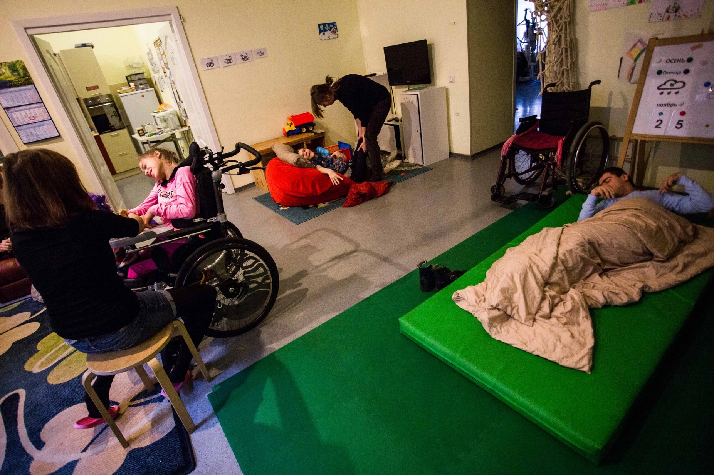
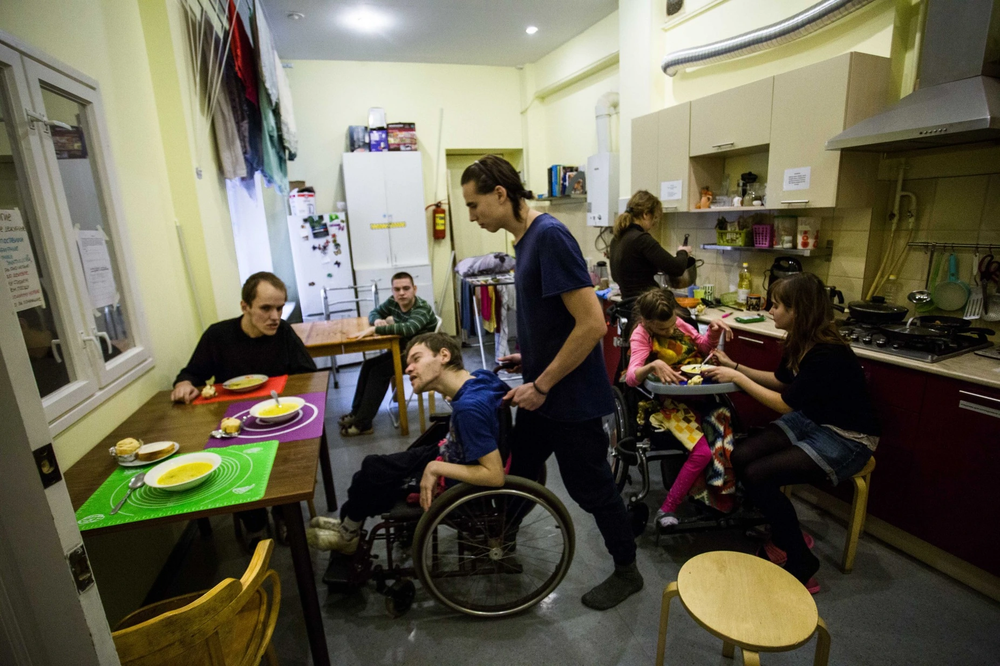

02 — Featured Work
FEATURED
WORK
Photography, creative work, research, and public practice.







CREATIVE
WORK
Art and activism are not separate traditions in my work. They are the same gesture — the act of making something that refuses to look away.
Kanonerskiy Walk
A soundscape I recorded for an online audio tour of Kanonersky Island and its residents facing relocation.
Trava Collective
Chernobyl Prayer
Created the visual accompaniment for "Chernobyl Prayer," a theatrical elegy for a generation's shared grief — and brought it to Voronezh.
Trava Collective
100 Year Man
A designed walking experience through Russia's human-rights history, with St Petersburg as the stage — women's rights, repression, resistance, built to be felt, not recited.
Trava Collective × Amnesty International
Look in Eye
A multimedia project on children who fled the war — I co-shaped its concept and structure and made the photography. Built with Amnesty International, to make a childhood lived between borders impossible to look away from.
Amnesty International
ANALYTICS
&
PUBLICATIONS
Research, reports, and written work at the intersection of civil society, human rights, and political change.
Article 228 Sentencing Analysis
The data behind a study of how Russia jails drug users under Article 228. I built the parsing and analysis — the charts and the figures — across 34,000 court verdicts (plus 2,389 hand-coded across 46 regions), revealing that nearly half of those imprisoned were first-time offenders.
Institute for Human Rights
UN Treaty Body Submissions
Co-authored submissions to UN treaty bodies and coordinated the monitoring that collected cases of convention violations against drug users — 20 submissions to 5 bodies (CAT, Human Rights Committee, CEDAW, CESCR, CRPD), 2010–2023, several reflected in the committees' concluding observations on Russia.
Andrey Rylkov Foundation
Drug Policy Reform
A drug-policy reform resource I wrote and designed end to end — laying out, from the perspective of people who use drugs, what's broken in Russia's drug laws and exactly how to fix it.
drugpolicyreform.tilda.ws
Selected Writing
As Teplitsa's St Petersburg coordinator I wrote on civic tech and digital strategy for NGOs, and published on climate and civil society in openDemocracy.
Teplitsa · openDemocracy
EVENTS
&
CAMPAIGNS
Public events, campaigns, and collective actions — from street interventions to institutional programming.
Arctic 30
One of the leaders of the campaign supporting the Arctic 30 — the Greenpeace crew detained in Murmansk in 2013.
Ecodefense
Right to Alternative Civilian Service, Murmansk
Led a campaign for the right to alternative civilian service in Murmansk region — after which the region became one of Russia's leaders by number of AGS applications.
Murmansk region
Nikita Konev
Led the support campaign for Nikita Konev, a Murmansk conscientious objector fighting for his right to alternative civilian service.
Murmansk region
Alexey Raskhodchikov
Led the campaign in defence of Murmansk activist Alexey Raskhodchikov, charged with wounding a police officer — publishing his account of the arrest and rallying public support.
7×7
Rave Not Raid
A campaign against police violence during nightclub raids — community organizing, public art actions, and a Telegram bot delivering real-time legal help.
Andrey Rylkov Foundation
Care Tent
Co-founded a harm-reduction and mental-health service operating at major music festivals — making festival culture a space for care and safety.
Trava Collective × ARF
Barents Eco-Art Academies
Coordinated two international youth programs across the Barents region (Russia, Norway, Germany), connecting environmental action with artistic practice.
Nature and Youth
Civic-Tech Hackathons
Co-organized civic-tech hackathons connecting developers and NGOs: Krasnoyarsk, 4SPb, and the Open Big Data Hackathon (2017).
Teplitsa
Online Events & Webinars
Organized and hosted online events and webinars for civil-society audiences.
—
World Drug Report 2020 Launch
Co-organized the presentation of the UN World Drug Report 2020 for NGOs.
ISSUP
Soldiers' Mothers Legal Education
Ran a legal-practice program and ECHR seminars with Soldiers' Mothers of St Petersburg.
Soldiers' Mothers of St Petersburg
Support Don't Punish
Organized Support Don't Punish actions with Trava.
Trava